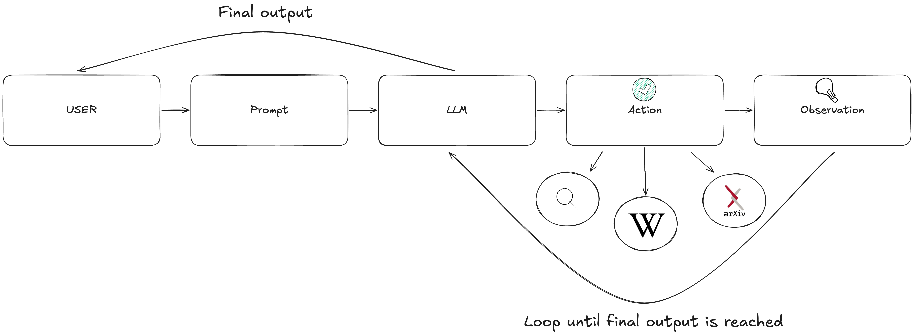
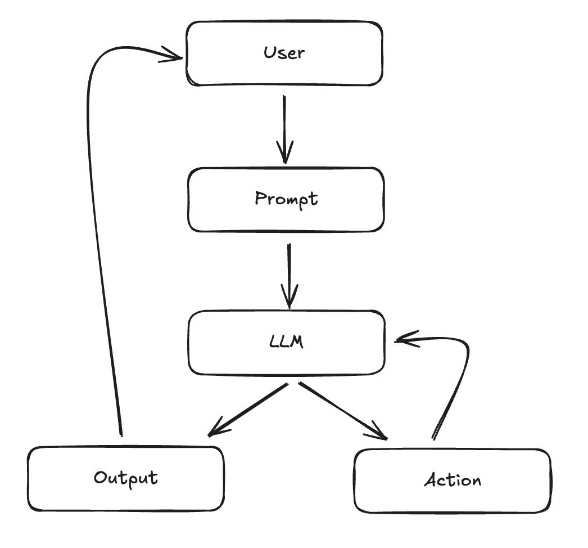
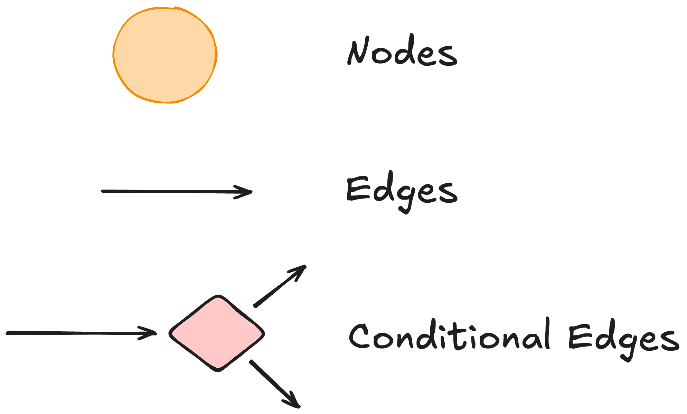
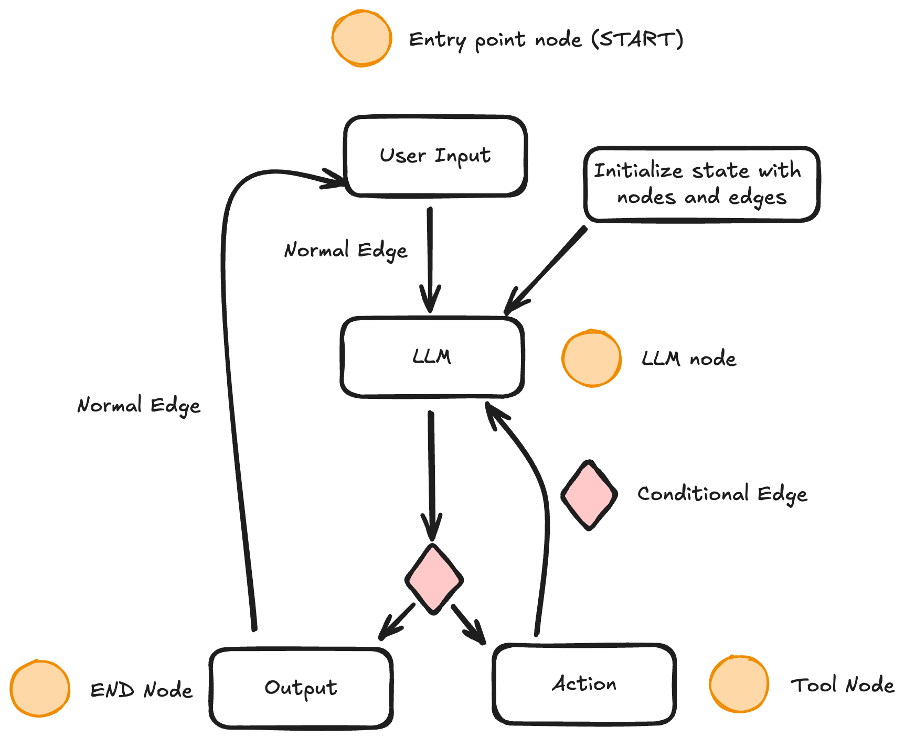

class: center, middle # Module 4: Getting Started with LangGraph ## By Lucas Soares --- <div class="slide"> <h1>Lucas Soares</h1> <div style="display: flex; align-items: center;"> <ul style="flex: 1;"> <li>AI Engineer</li> <br> <br> <br> <br> </ul> <img src="../notebooks/assets-resources/profile_pic.png" width="300" style="margin-left: 20px;"> </div> </div> --- <div class="slide"> <h1>Lucas Soares</h1> <div style="display: flex; align-items: center;"> <ul style="flex: 1;"> <li>AI Engineer</li> <br> <li>Curious about Building Tools with AI </li> <br> <br> </ul> <img src="../notebooks/assets-resources/profile_pic.png" width="300" style="margin-left: 20px;"> </div> </div> --- # Understanding Agentic Systems - **Agentic Systems**: Systems that utilize large language models (LLMs) to manage the control flow of applications. -- - **Key Functions**: Routing decisions, tool selection, and evaluating output sufficiency. -- - **Agent Loop**: Continuous decision-making process that enables agents to solve complex tasks. <p class="footnote"> <a href='https://langchain-ai.github.io/langgraph/concepts/high_level/#deployment'> Understanding agentic systems in LangGraph. </a> </p> --- # The Agent Loop --  <p class="footnote"> <a href='https://blog.langchain.dev/openais-bet-on-a-cognitive-architecture/'> Explanation of the agent loop in cognitive architectures. </a> </p> --- # Practical Use Case: Customer Support Agent -- - **Scenario**: An LLM-powered customer support agent. -- - **User Input**: Customer asks about order status. -- - **LLM Decision**: Determines if it can provide the status directly or if it needs to fetch data from the database. -- - **Action Taken**: If data fetch is needed, the agent queries the database and updates the user with the order status. <p class="footnote"> <a href='https://langchain-ai.github.io/langgraph/concepts/high_level/#deployment'> Practical use case of LLM agents in customer support. </a> </p> --- ## Advantages of LLM Agents -- - **Flexibility**: Agents can adapt to various tasks by determining the best action to take. -- - **Specialization**: LLM agents can be specialized with a set of tools to perform niche tasks. -- - **Multi-Agent Collaboration**: Specialized LLM agents can collaborate to perform complex tasks. <p class="footnote"> <a href='https://blog.langchain.dev/langgraph-multi-agent-workflows/'> LangGraph: Multi-Agent Workflows </a> </p> --- ## Key Components of Agentic Systems -- 1. **Tool Calling**: Utilizing external tools to perform tasks. -- 2. **Action Taking**: Executing actions based on LLM outputs. -- 3. **Memory**: Keeping track of interactions for context-aware responses. -- 4. **Planning**: Structuring steps to ensure optimal decision-making. <p class="footnote"> <a href='https://langchain-ai.github.io/langgraph/concepts/high_level/#deployment'> Key components of agentic systems. </a> </p> --- # Agents as Graphs -- - Workflows built with agents are usually structured as graphs!!  --- # Why LangGraph? LangGraph is designed for building agentic applications with some core principles: -- - **Controllability**: Offers low-level control which increases reliability in agentic systems. -- - **Human-in-the-Loop**: Built-in persistence layer enhances human-agent interaction patterns. -- - **Streaming First**: Supports streaming of events and tokens, providing real-time feedback to users. <p class="footnote"> <a href='https://langchain-ai.github.io/langgraph/concepts/high_level/#why-langgraph'> Overview of LangGraph's purpose and principles. </a> </p> --- ## The Basic Components of LangGraph LangGraph models agent workflows as graphs: --  -- - **Nodes**: Python functions that implement the logic of agents, taking the current State as input and returning an updated State. -- - **Edges/Conditional Edges**: Functions that implement fixed/conditional transitions to determine which Node to execute next based on the current State. <p class="footnote"> <a href='https://langchain-ai.github.io/langgraph/concepts/low_level/#update-state'> Explanation of LangGraph's components. </a> </p> --- ## States in LangGraph These graphs in LangGraph are driven by: -- - **States**: Shared data structures that evolve over time as Nodes execute and pass messages along Edges. -- - **Message Passing**: Nodes send messages to activate other Nodes, facilitating the execution of workflows in discrete iterations or "super-steps". <p class="footnote"> <a href='https://langchain-ai.github.io/langgraph/concepts/low_level/#update-state'> Overview of how graphs and states interact in LangGraph. </a> </p> --- class: center, middle <h1> <span style="background-color: lightgreen"> Notebook Demo: Introduction to LangGraph </span> </h1> --- ## Nodes In LangGraph, Nodes are the core functional units: -- - **Functionality**: Each Node is a Python function that processes the current State and outputs an updated State. -- - **Execution**: Nodes can run synchronously or asynchronously, and are added to the graph using the `add_node` method. -- - **Special Nodes**: Includes START and END Nodes to manage the flow of execution in the graph. <p class="footnote"> <a href='https://langchain-ai.github.io/langgraph/concepts/low_level/#update-state'> Details on the functionality and structure of Nodes in LangGraph. </a> </p> --- class: center, middle <h1> <span style="background-color: lightgreen"> Notebook Demo: Nodes in LangGraph </span> </h1> --- ## Edges Edges define the routing logic in LangGraph: - **Types of Edges**: -- - **Normal Edges**: Direct transitions from one Node to another. -- - **Conditional Edges**: Determine the next Node(s) to execute based on a function's output. -- - **Entry Points**: Specify which Node to invoke first based on user input. -- - **Parallel Execution**: Multiple outgoing edges from a Node can trigger parallel execution of destination Nodes. <p class="footnote"> <a href='https://langchain-ai.github.io/langgraph/concepts/low_level/#update-state'> Explanation of Edges and their role in LangGraph. </a> </p> --- class: center, middle <h1> <span style="background-color: lightgreen"> Notebook Demo: Edges in LangGraph </span> </h1> --- # Agent Loop in LangGraph - Outline of an basic agent loop in langgraph: --  --- class: center, middle <h1> <span style="background-color: lightgreen"> Notebook Demo: A Basic Research Agent in LangGraph </span> </h1> --- # Agentic Patterns -- ## Plan & Execute <img src="../notebooks/assets-resources/plan-execute.png" width="600"> --- # Agentic Patterns ## Supervisor <img src="../notebooks/assets-resources/supervisor.png" width="600"> <p class="footnote"> <a href='https://blog.langchain.dev/langgraph-multi-agent-workflows/'>LangGraph: Multi-Agent Workflows</a> </p> --- # Agentic Patterns ## Multi-Agent <img src="../notebooks/assets-resources/multi-agent.png" width="600"> <p class="footnote"> <a href='https://blog.langchain.dev/langgraph-multi-agent-workflows/'>LangGraph: Multi-Agent Workflows</a> </p> --- # Agentic Patterns ## Flow Engineering <img src="../notebooks/assets-resources/flow-engineering.png" width="600"> <p class="footnote"> <a href='https://arxiv.org/abs/2401.08500'>Code Generation with AlphaCodium</a> </p> --- class: center, middle <h1> <span style="background-color: lightgreen"> Notebook Demo: Self-Reflective RAG Agent with LangGraph </span> </h1>